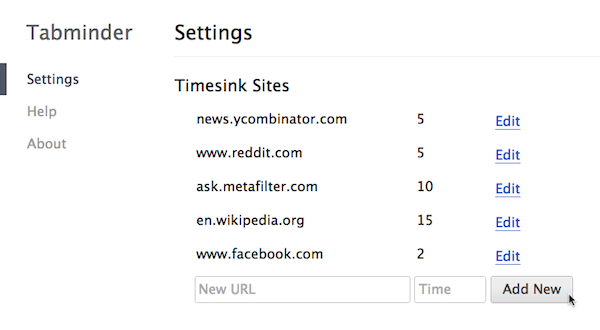
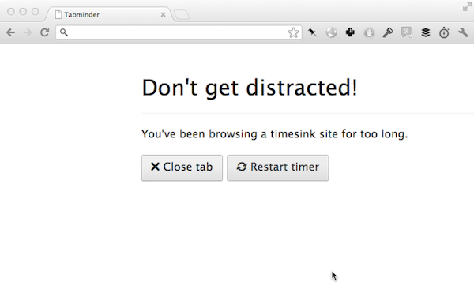

Stop distracted browsing before it starts.
Don't let one distracting tab turn into hours of wasted time.
Stay mindful of your browsing with Tabminder.
New in version 1.0:Donations securely processed by PayPal
There's nothing wrong with taking a quick break, but it's easy to waste a ton of time as soon as you open a new tab. Tabminder helps make you more mindful of browsing distracting sites by providing a gentle reminder every few minutes, preventing quick visits to Reddit, Twitter, and Hacker News from turning into work-sucking time vortexes. When you open a distracting tab, Tabminder starts counting down from your preset time limit.

When time's up, it will prompt you to close the tab or restart the timer. This is just annoying enough to intercept distracted browsing before it goes too far, but not so strict that it prevents you from taking a break once in a while. (You deserve it, right?)

Tabminder is free software. Its source code is available on GitHub under an MIT license.